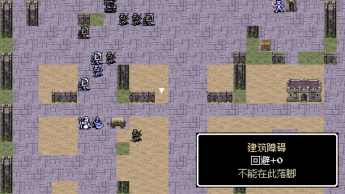
REVENGE MEMORIES / 0.2.2
第一章与第二章 · 两轮抽查
0.2.2 已修复加减号缺字：回避+20表示石铺地提供20点物理回避，当前截图已刷新。
修复箱车碰撞和提示遮挡，补齐地形信息；调整押送所、旧塔、军港与海洞，使防守窄口、远程支援、分路包抄和截断退路都有实际空间。
15 张战场视觉与通路检查10 个关卡实际试玩11 次完整通关样本58 张运行截图
请重新启动 0.2.2 应用。已有战斗存档保留原布局；选择重试或返回整备后重新进场，会采用本次调整。

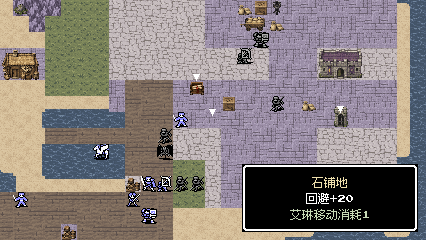

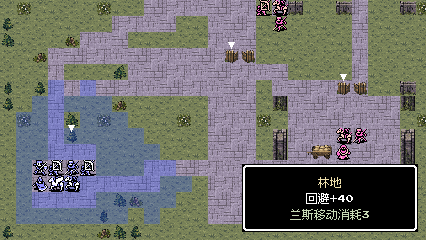

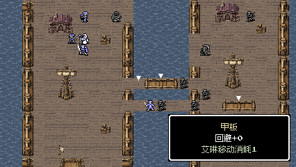

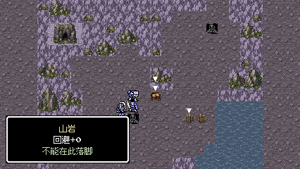

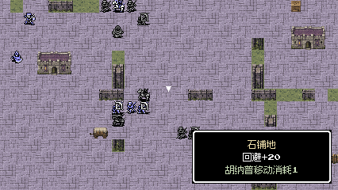

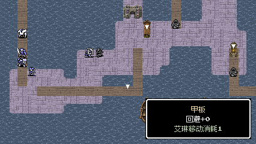

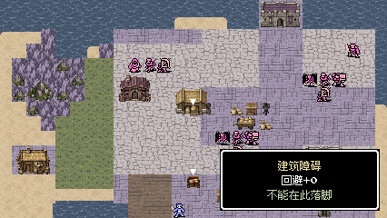

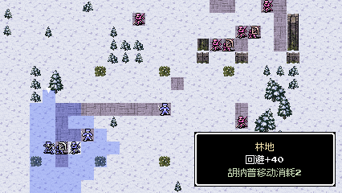

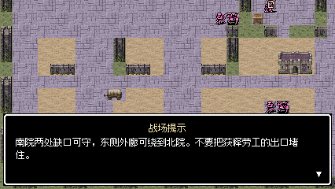

查看全部 15 张战场的实际视口

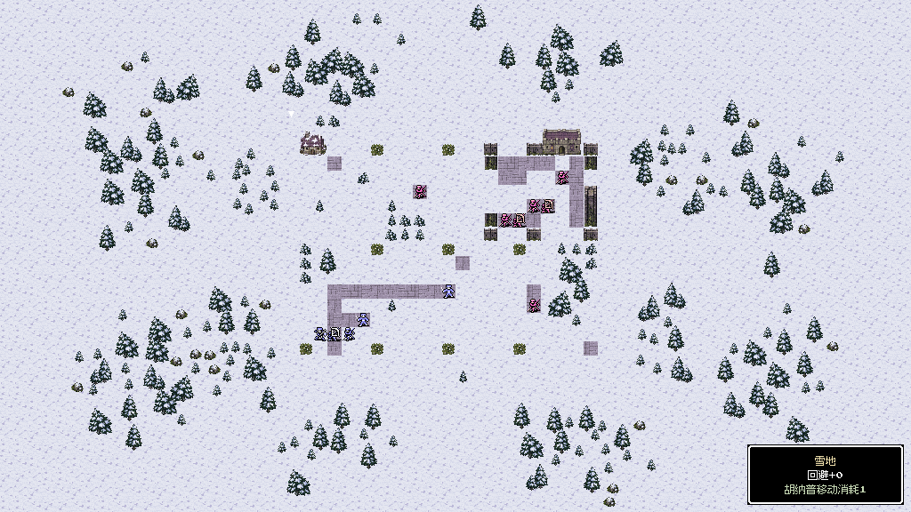
M11 · 完整战场
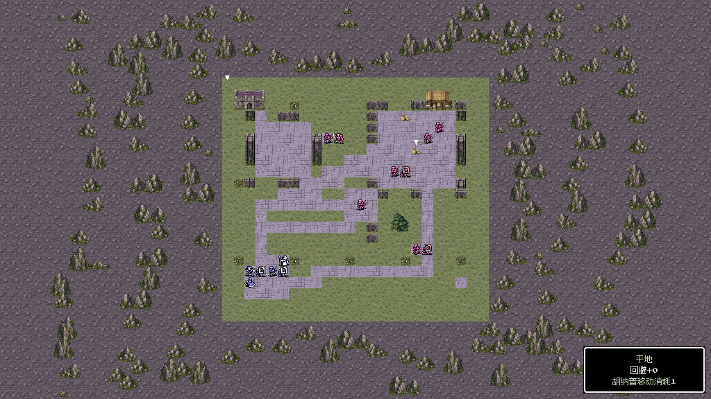
M12 · 完整战场
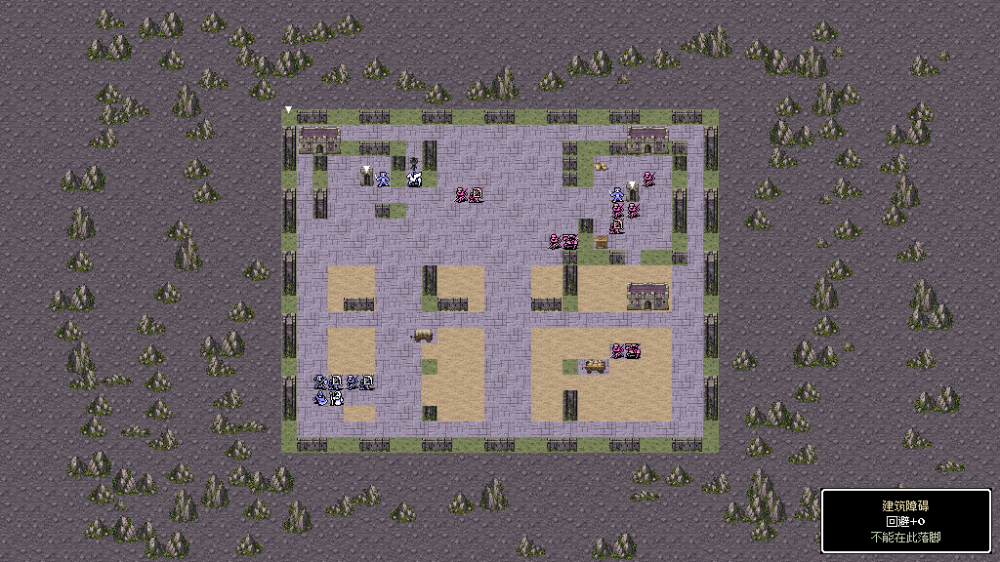
M13 · 完整战场
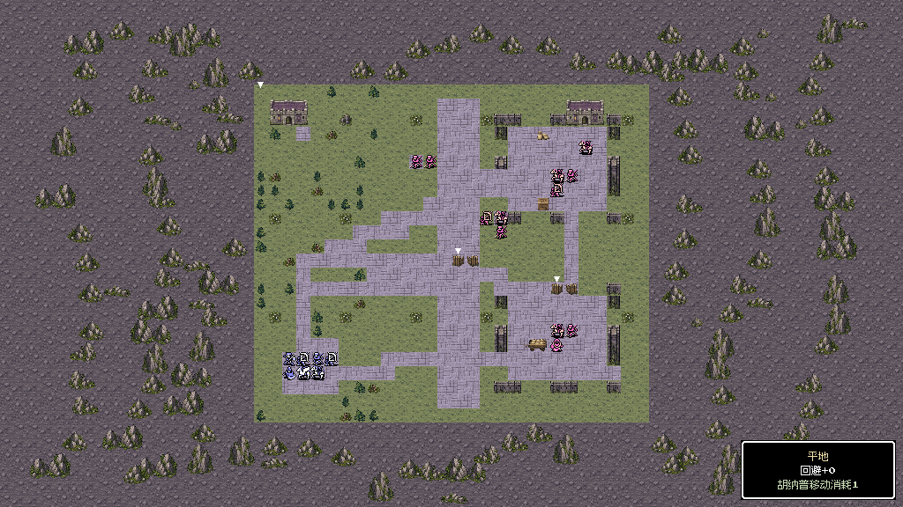
M14 · 完整战场
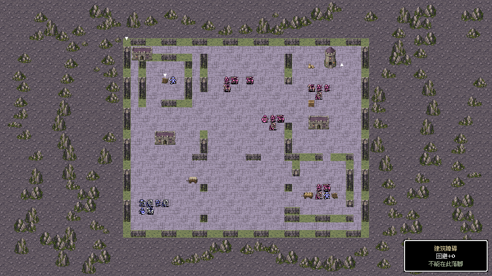
M15 · 完整战场
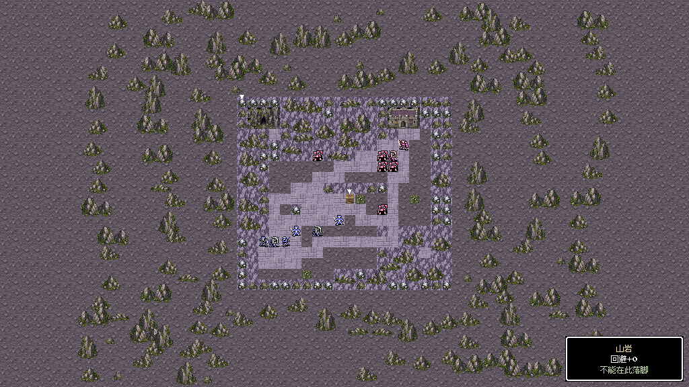
S11 · 完整战场
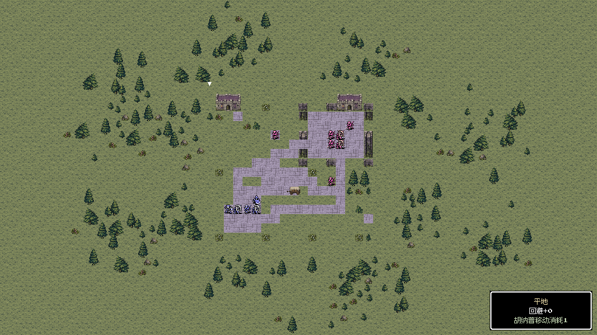
S12 · 完整战场
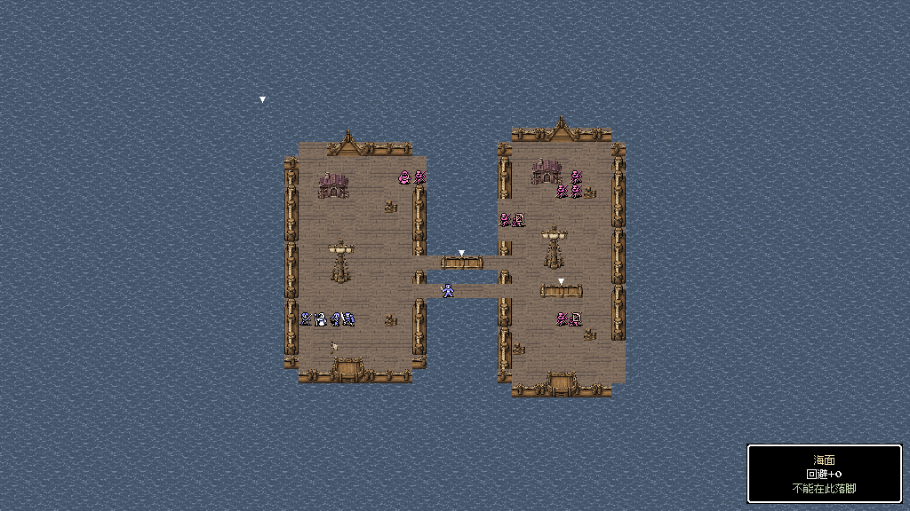
F21 · 完整战场
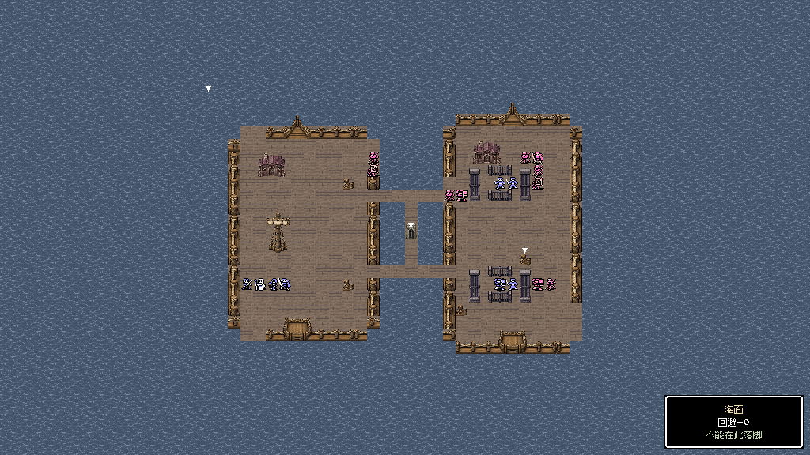
F22 · 完整战场
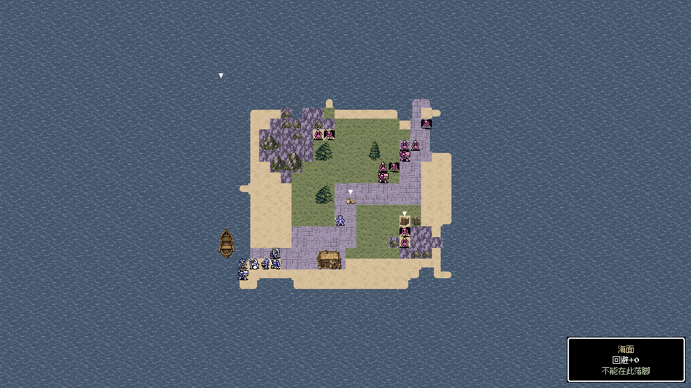
F23 · 完整战场
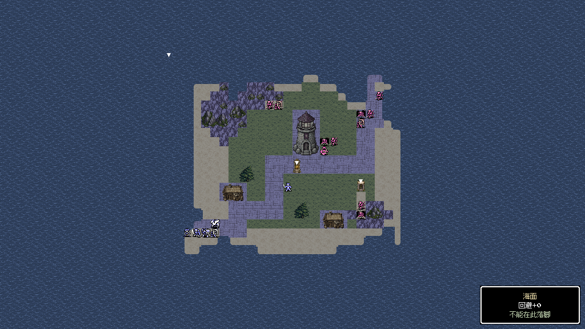
F24 · 完整战场
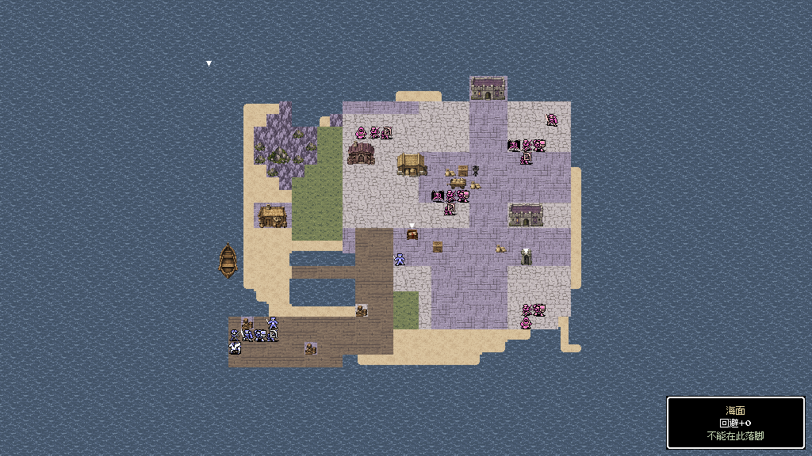
F25 · 完整战场
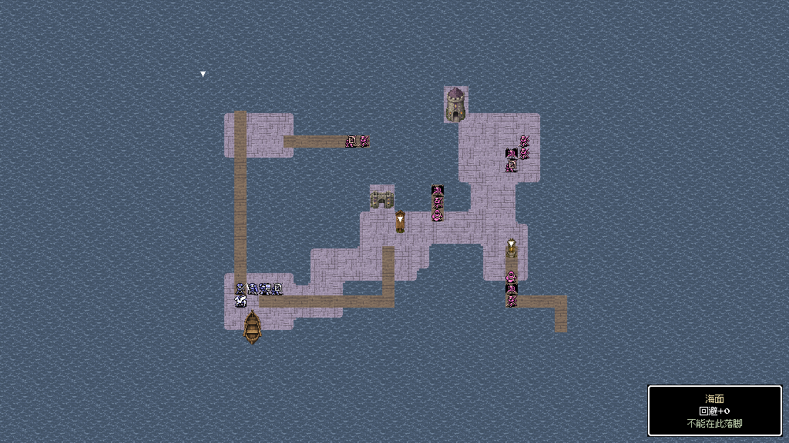
F26 · 完整战场
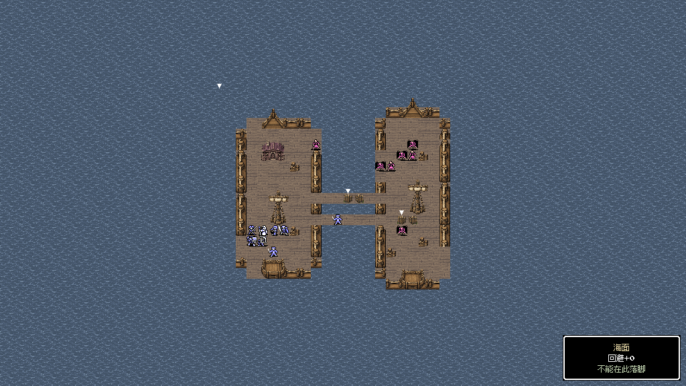
S21 · 完整战场
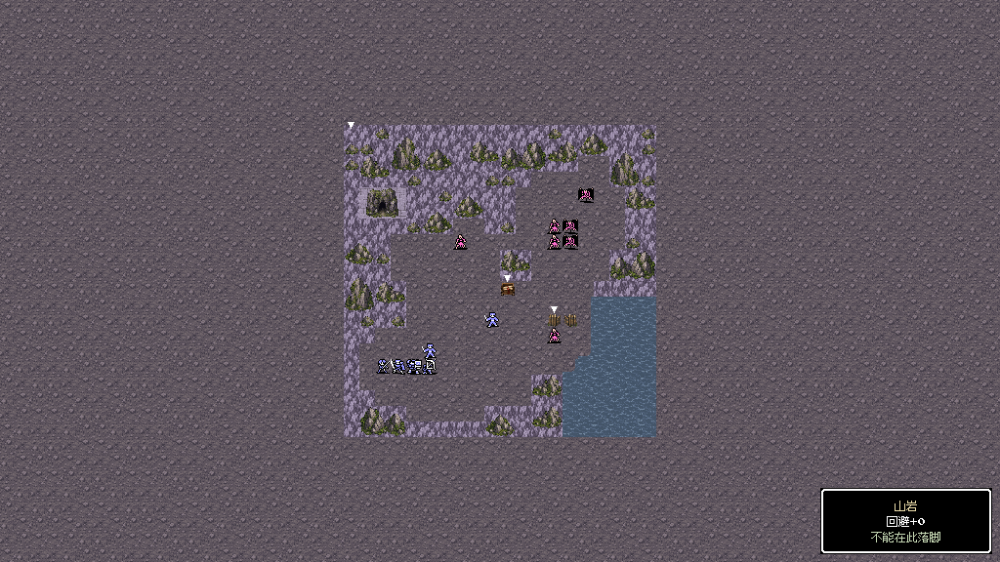
S22 · 完整战场两轮实际试玩结果
按真实检查点经正常整备与世界路线重新入场。以下为成功样本；失败、停步和重试完整保留于报告。
| 轮次 | 关卡 | 回合 | 结果 |
|---|---|---|---|
| 1 | M13 | 11 | 通关 |
| 1 | S12 | 6 | 通关 |
| 1 | F24 | 13 | 通关 |
| 1 | F21 | 16 | 通关 |
| 2 | M12 | 13 | 通关 |
| 2 | F25 | 18 | 通关 |
| 2 | F26 | 24 | 通关 |
| 2 | M13 | 11 | 通关 |
| 2 | S22 | 23 | 通关 |
| 2 | M14 | 6 | 通关 |
| 2 | M15 | 11 | 通关 |